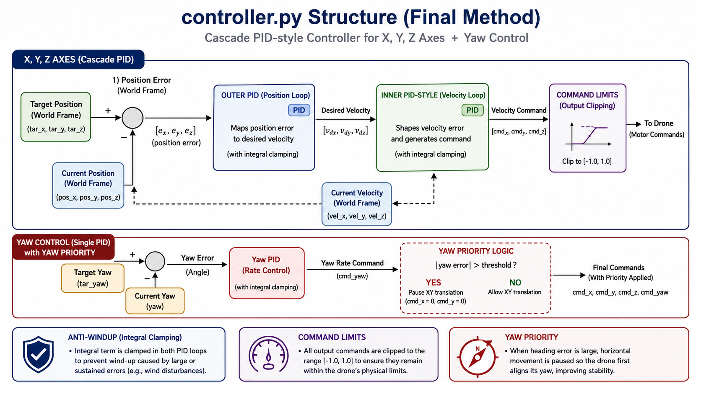

Primary Direction
Profile
Robotics and AI portfolio with CPD evidence.
我目前在曼彻斯特大学攻读机器人学硕士，具备福州大学和梅努斯大学的软件工程学习背景。
我的当前工作重点包括自主机器人、ROS2 系统集成、机器人感知、控制和应用 AI。我的主要职业目标是进入具身智能或机器人公司，次要方向是科技公司的 AI 与机器学习工程岗位。
本网站展示我的代表项目、技术证据和 CPD 反思，说明我如何通过机器人、AI 和软件项目发展工程能力。
Career Objective
职业目标
Technical Focus
ROS2、感知、导航与集成
ROS2、机器人感知、导航、运动规划、机器学习评估和系统集成。Secondary Direction
AI 与机器学习工程
科技公司的 AI 与机器学习工程岗位。Selected Projects
项目证据

Featured Robotics Project
Leo Rover Autonomous Mobile Manipulation
基于 Leo Rover 平台的团队机器人项目，开发自主移动操作流程，结合 ROS2、SLAM 导航、感知、任务状态逻辑与抓取放置。
My contribution
我的贡献集中在理解 ROS2 系统结构、记录软件架构和任务执行流程、支持感知到行为的集成、准备测试证据，并反思系统层面的限制。我也帮助将团队实现转化为清晰的图表和说明，用于最终项目证据。
Reflection
该项目让我理解到，自主机器人不仅依赖单个算法选择，更依赖感知、导航、操作和状态管理的可靠集成。

Control Project
UAV Feedback Control for Position and Yaw Stabilisation
面向无人机位置和偏航稳定的反馈控制项目。控制器比较当前状态与目标位姿，并生成 x、y、z 和偏航角速度命令。
My contribution
我独立完成 controller_simple.py，包括用于仿真测试和真实平台实验的核心反馈控制逻辑。
Machine Learning / NLP Internship
ByteDance Machine Learning Internship: Chinese NLP Model Optimisation
一项机器学习实习项目，聚焦中文语言任务中的 NLP 模型实现与优化，涉及 Skip-gram、LSTM 和 BERT-wwm，并关注中文阅读理解和模型性能提升。
My contribution
我的贡献包括实现模型流程、实验不同 NLP 架构、支持中文阅读理解优化，并分析模型表现。这段经历加强了我对机器学习工作流、模型评估以及研究模型与实际 AI 应用之间关系的理解。
Technical focus
项目涉及自然语言处理、表示学习、序列建模、基于 Transformer 的语言模型，以及中文 NLP 任务中的性能评估。
Geospatial Engineering
GIS and Spatiotemporal Data Engineering
涉及空间数据处理、加权重分配方法和性能敏感 Python 实现的地理空间数据项目。
Technical focus
使用 GeoPandas、Rasterio、NumPy 和 Shapely 进行地理空间处理，关注坐标系统、栅格-矢量操作和计算效率。
Skills
Technical Skills and Engineering Practice
Robotics and Embodied Systems
ROS2, Nav2, SLAM, Gazebo, RViz, TF, robot system integration, mobile manipulation.
Robot Perception and AI
RGB-D sensing, RealSense D435, computer vision, OpenCV, NLP, BERT-wwm, LSTM and machine learning evaluation.
Software Engineering
Python, C++, JavaScript, Git, Linux, modular design, debugging, documentation.
Professional Practice
Technical reporting, project diagrams, presentation, CPD reflection, requirement-based evaluation.
CPD Evidence
CPD Reflection and UK-SPEC Evidence
This website supports my CPD Reflection submission and provides evidence for selected UK-SPEC competencies.
A2
A2 — Complex robotics problem-solving
Focus Developing stronger ability to solve complex technical problems in embodied intelligence and robotics systems. Evidence Leo Rover ROS2 integration, navigation/perception/manipulation pipeline, system debugging and mission-state logic.B3
B3 — Implementation, testing and evaluation
Focus Improving how I implement engineering solutions and evaluate them against requirements. Evidence Leo Rover mission testing, UAV controller implementation, simulation and controlled testing, requirements-based reflection.D2
D2 — Technical communication and portfolio presentation
Focus Presenting proposals, design decisions and conclusions more clearly. Evidence Software architecture diagrams, mission execution flow, video scripts, project reports and this rebuilt portfolio website.Writing
Robotics, AI and CPD Notes
What I Learned from Building a ROS2 Mobile-Manipulation System
A short reflection on integrating perception, navigation, manipulation and mission-state logic into one robotics pipeline.
From Coursework Demo to Engineering Evidence
How I turn project outputs into evidence by recording requirements, tests, diagrams, limitations and reflection.
How I Use a Portfolio Website to Record CPD
Using a portfolio structure to connect project artefacts, personal contribution and UK-SPEC competence evidence.
Now
Current Focus
具身智能、自主机器人和 ROS2 系统集成。
机器人感知、RGB-D 传感、目标检测和机器学习评估。
作品集建设、技术沟通和 CPD 证据整理。